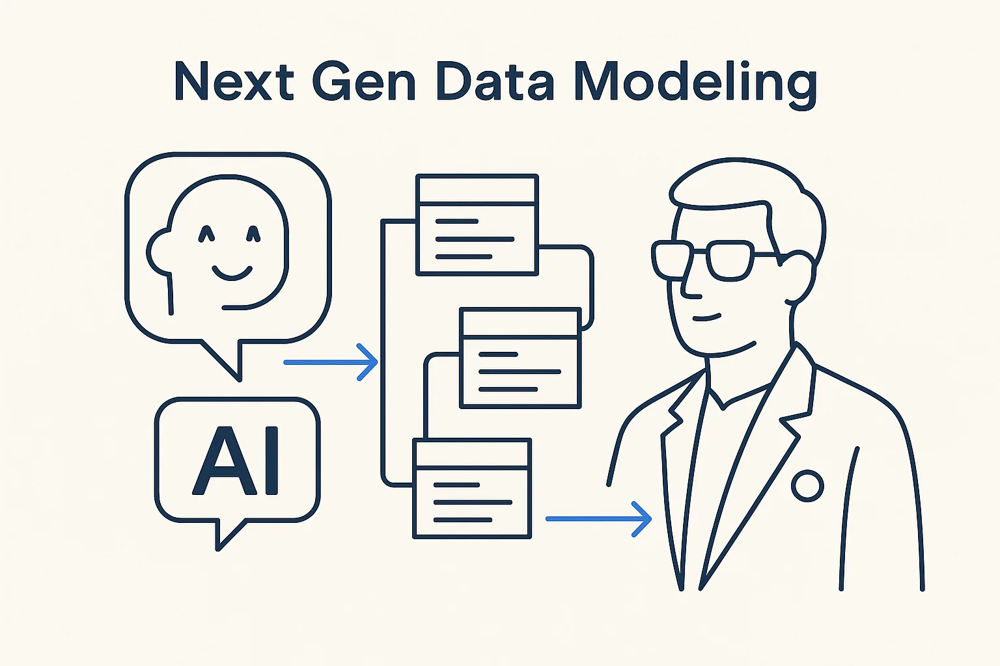

How AI and generative tech change the way we design, maintain and evolve data models — and the new role of the architect who stays ahead of it.

> How AI and generative tech change the way we design, maintain and evolve data models — and the new role of the architect who stays ahead of it.
Data modeling isn’t going away — but how we do it is changing fast. AI and generative technologies shift the work from hand-drawing models to *directing* them: the architect specifies structure, rules and intent, and the machine generates, checks and evolves the model from that. The classic knowledge (Data Vault, dimensional, 3NF, conceptual/logical/physical) still matters — it’s what lets you judge what the AI produces — but it now sits alongside a new set of skills.
The sharpest change is the role of the architect. The old output was a PowerPoint that often stayed unread; the new output is participation — supplying rules and decisions in a technical, machine-readable metadata format that actually drives the platform. The architect moves from documenting the system to being an active part of building it. That is a better job, and a more demanding one.
Staying ahead means treating AI as a first-class participant in modeling, not a bolt-on: models rich enough to generate from, structure clean enough for AI to read, and a human who curates rather than rubber-stamps. Next-gen data modeling is data modeling with the leverage turned up — for the architects and engineers willing to change how they work.
Where it lives: the AI & innovation edge of Breakthrough Modeling — where the craft is being rewritten.